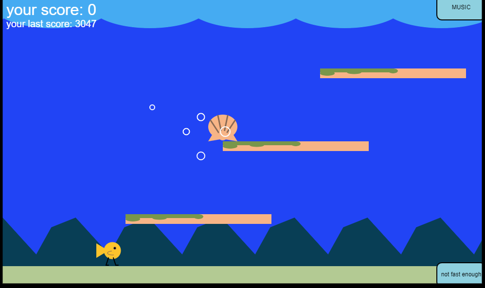

A silly little side scroller
- Inpsired by Flappy Bird and Geometry Dash.
- Steep learning curve.
-
Hours of fun (perhaps).
Get the highest score.
You score points by staying on platforms and catching shells.
Avoid the bubbles.
Touching bubbles or failing to properly jump on a platform will be an instant game-over.